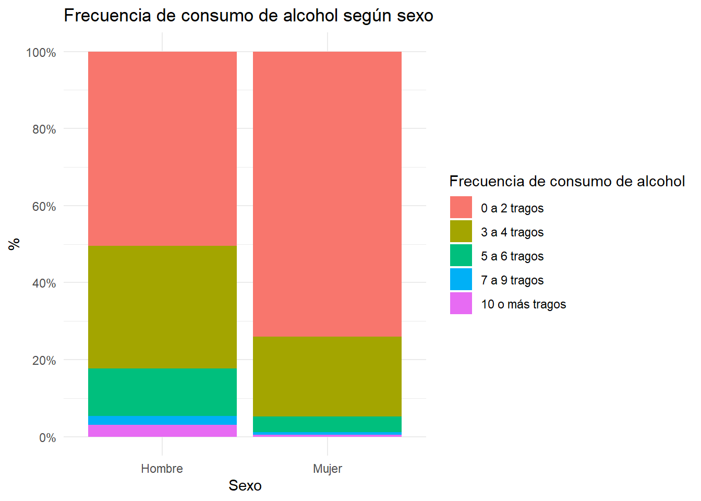
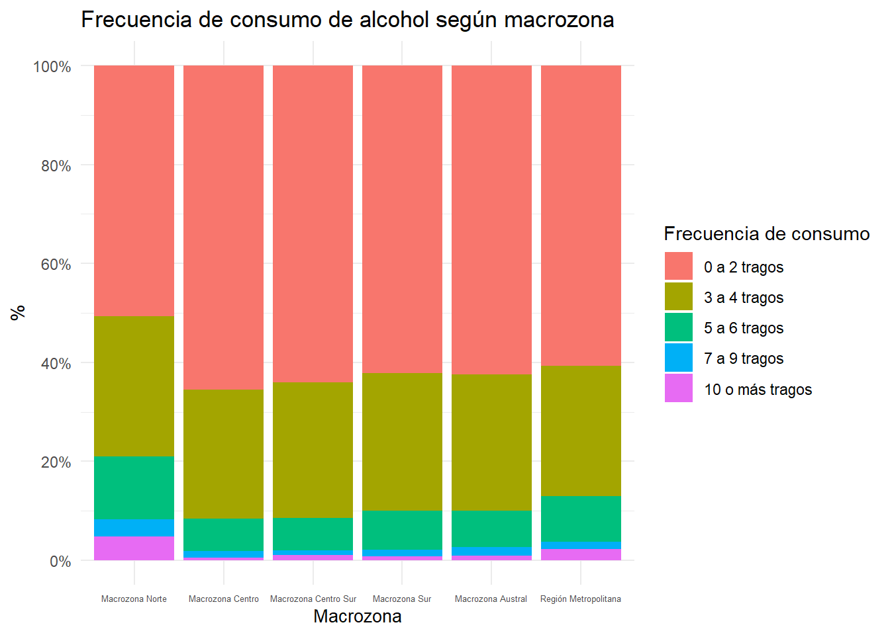

# Chunk de configuración general
set.seed(1234) # SEED para cualquier proceso aleatorio
# Opciones generales de knitr
knitr::opts_chunk$set(
echo = TRUE, # mostrar código
warning = TRUE,
message = FALSE
)Evaluación Sumativa N°1 – Reproducibilidad y comunicación de resultados
Capítulo 1: Introducción
El Instituto Nacional sobre el Abuso de Alcohol y Alcoholismo (NIAAA) define niveles y patrones de consumo de alcohol, distinguiendo entre consumo de bajo riesgo, riesgoso y episodios intensivos, cada uno asociado a distintos daños potenciales. Estas definiciones permiten comparar estudios, verificar perfiles sociodemográficos de consumo, monitorear tendencias y diseñar intervenciones de salud basadas en evidencia.
Para que esa evidencia sea sólida, es clave hacer investigación rigurosa sobre consumo de alcohol, con datos de calidad y procedimientos transparentes.En este contexto, la reproducibilidad implica que otras personas puedan obtener los mismos resultados con los mismos datos y código, mientras que la replicabilidad se refiere a que estudios independientes encuentren resultados consistentes con nuevos datos, fortaleciendo la confianza en los hallazgos.
En el presente análisis, se podrá ver la relación entre la cantidad (o frecuencia) de consumo y algunas variables sociodemográficas de interés, obtenidas desde el XV Estudio Nacional de Drogas en Población General de Chile (2022).
Capítulo 2: Metodología
Antes de partir con el ejercicio, serán instaladas y cargadas las librerías que serán utilizadas en la evaluación formativa:
library(tidyr)Warning: package 'tidyr' was built under R version 4.3.3library (dplyr)Warning: package 'dplyr' was built under R version 4.3.3library(purrr)Warning: package 'purrr' was built under R version 4.3.3library(ggplot2)
library(scales)
library(haven)Warning: package 'haven' was built under R version 4.3.3library(skimr)
library(stringr)
library(purrr)
library(srvyr)Warning: package 'srvyr' was built under R version 4.3.3Antes de cargar la base de datos, se configurará la carpeta del proyecto. Lugar donde se encontrará toda la información con la que se trabajará.
setwd("C:/Users/nelia/OneDrive - Fundación Paz Ciudadana/Nelia personal/Diplomado Data Science para Ciencias Sociales/R/Módulo 4/Ev1")Cargando la base de datos solicitada en las instrucciones. Correspondiente a la Encuesta Nacional de Drogas (SENDA)
ev_senda <- readRDS("SENDA2022.RDS")2.0) Elección de variables
La instrucción señala que hay que buscar una variable de interés y tres variables secundarias. Para poder realizar esto es necesario leer el manual correspondiente a la encuesta, puesto que aquí está todo el detalle metodológico de la misma. Una vez revisada las variables, se procedió a revisar una breve búsqueda bibliográfica en torno al tema del consumo de alcohol.
Según el NIAAA (2007), el consumo excesivo de alcohol (heavy drinking) es definido:
1) Para los hombres, consumir cinco o más bebidas alcohólicas en cualquier día o 15 o más bebidas alcohólicas a la semana;
2) Para las mujeres, consumir de cuatro o más bebidas alcohólicas en cualquier día u ocho o más bebidas alcohólicas a la semana.
A raíz de esta información, se decidió caracterizar la variable de bebidas alcohólicas consumidas cada vez. Por lo que las variables escogidas son las siguientes:
OH_1 (esta es el filtro de la pregunta OH_9, por lo que se utilizará para el análisis): ¿Ha tomado Ud. alcohol alguna vez en su vida?
OH_9: ¿Cuántos tragos suele tomar usted en un día típico de consumo de alcohol?
SEXO
EDAD
REGION
A partir de esta selección, será generado un dt con las variables seleccionadas:
senda_final <- ev_senda %>%
select(OH_1, OH_9, SEXO, EDAD, REGION, FACTOR_EXPANSION)Antes de comenzar a hacer al análisis propiamente tal y, al realizar la revisión del manual es posible dar cuenta que el análisis de la encuesta debe realizarse con un factor de expansión (variable incluida en la selección). Éste será utilizado en forma adhoc, en la medida que vayan analizándose los datos.
A continuación, se dará comienzo al análisis solicitado en la pauta.
2.1) Exploración inicial de los datos
a) Revisión de la estructura
glimpse(senda_final) #revisando las características generales del data frameRows: 17,454
Columns: 6
$ OH_1 <dbl+lbl> 2, 2, 1, 1, 1, 1, 1, 1, 1, 1, 1, 1, 1, 1, 1, 1, 1…
$ OH_9 <dbl+lbl> NA, NA, NA, 0, 1, NA, 0, NA, NA, 1, NA, NA, …
$ SEXO <dbl+lbl> 1, 2, 2, 1, 1, 2, 1, 1, 2, 2, 1, 1, 1, 1, 1, 2, 2…
$ EDAD <dbl> 18, 50, 45, 51, 65, 41, 50, 35, 65, 26, 51, 26, 24, 1…
$ REGION <dbl> 13, 13, 13, 13, 13, 13, 13, 13, 13, 13, 13, 13, 13, 1…
$ FACTOR_EXPANSION <dbl> 2125.8433, 938.5725, 563.9884, 803.2165, 803.2165, 13…str(senda_final) #complementando código anteriortibble [17,454 × 6] (S3: tbl_df/tbl/data.frame)
$ OH_1 : dbl+lbl [1:17454] 2, 2, 1, 1, 1, 1, 1, 1, 1, 1, 1, 1, 1, 1, 1, 1, 1, 1...
..@ label : chr "<p><u><strong>MÓDULO ALCOHOL</strong></u></p><p> </p><p>OH_1. ¿Ha to"
..@ format.stata: chr "%10.0g"
..@ labels : Named num [1:4] 1 2 88 99
.. ..- attr(*, "names")= chr [1:4] "Sí" "No" "No sabe" "No contesta"
$ OH_9 : dbl+lbl [1:17454] NA, NA, NA, 0, 1, NA, 0, NA, NA, 1, NA, NA, 0, ...
..@ label : chr "<p>OH_9. ¿Cuántos tragos suele tomar usted en un día típico de consumo de"
..@ format.stata: chr "%10.0g"
..@ labels : Named num [1:5] 0 1 2 3 4
.. ..- attr(*, "names")= chr [1:5] "0 a 2 tragos" "3 a 4 tragos" "5 a 6 tragos" "7 a 9 tragos" ...
$ SEXO : dbl+lbl [1:17454] 1, 2, 2, 1, 1, 2, 1, 1, 2, 2, 1, 1, 1, 1, 1, 2, 2, 1...
..@ format.stata: chr "%10.0g"
..@ labels : Named num [1:2] 1 2
.. ..- attr(*, "names")= chr [1:2] "HOMBRE" "MUJER"
$ EDAD : num [1:17454] 18 50 45 51 65 41 50 35 65 26 ...
..- attr(*, "format.stata")= chr "%10.0g"
$ REGION : num [1:17454] 13 13 13 13 13 13 13 13 13 13 ...
..- attr(*, "format.stata")= chr "%8.2f"
$ FACTOR_EXPANSION: num [1:17454] 2126 939 564 803 803 ...
..- attr(*, "format.stata")= chr "%8.2f"b) Determinando tipo de variables
sapply(senda_final[, c("OH_1", "OH_9", "SEXO", "EDAD", "REGION")], class)$OH_1
[1] "haven_labelled" "vctrs_vctr" "double"
$OH_9
[1] "haven_labelled" "vctrs_vctr" "double"
$SEXO
[1] "haven_labelled" "vctrs_vctr" "double"
$EDAD
[1] "numeric"
$REGION
[1] "numeric"sapply(senda_final[, c("OH_1", "OH_9", "SEXO", "EDAD", "REGION")], typeof) OH_1 OH_9 SEXO EDAD REGION
"double" "double" "double" "double" "double" c) Detección de valores perdidos
skim(senda_final) #Para revisar si hay valores fuera de rango| Name | senda_final |
| Number of rows | 17454 |
| Number of columns | 6 |
| _______________________ | |
| Column type frequency: | |
| numeric | 6 |
| ________________________ | |
| Group variables | None |
Variable type: numeric
| skim_variable | n_missing | complete_rate | mean | sd | p0 | p25 | p50 | p75 | p100 | hist |
|---|---|---|---|---|---|---|---|---|---|---|
| OH_1 | 0 | 1.00 | 1.43 | 3.89 | 1.00 | 1.00 | 1.00 | 2.0 | 99.00 | ▇▁▁▁▁ |
| OH_9 | 9040 | 0.48 | 0.54 | 0.85 | 0.00 | 0.00 | 0.00 | 1.0 | 4.00 | ▇▃▁▁▁ |
| SEXO | 0 | 1.00 | 1.58 | 0.49 | 1.00 | 1.00 | 2.00 | 2.0 | 2.00 | ▆▁▁▁▇ |
| EDAD | 0 | 1.00 | 41.97 | 15.24 | 12.00 | 29.00 | 42.00 | 56.0 | 65.00 | ▃▆▆▆▇ |
| REGION | 0 | 1.00 | 9.20 | 4.37 | 1.00 | 5.00 | 10.00 | 13.0 | 16.00 | ▃▅▅▇▃ |
| FACTOR_EXPANSION | 0 | 1.00 | 741.47 | 781.08 | 39.37 | 249.21 | 484.19 | 949.8 | 9499.64 | ▇▁▁▁▁ |
d) Distribución de variables
senda_final %>% #Revisando frecuencias
count(
OH_1,
OH_9,
SEXO,
EDAD,
REGION)# A tibble: 5,811 × 6
OH_1 OH_9 SEXO EDAD REGION n
<dbl+lbl> <dbl+lbl> <dbl+lbl> <dbl> <dbl> <int>
1 1 [Sí] 0 [0 a 2 tragos] 1 [HOMBRE] 12 3 1
2 1 [Sí] 0 [0 a 2 tragos] 1 [HOMBRE] 12 8 1
3 1 [Sí] 0 [0 a 2 tragos] 1 [HOMBRE] 13 16 1
4 1 [Sí] 0 [0 a 2 tragos] 1 [HOMBRE] 14 4 1
5 1 [Sí] 0 [0 a 2 tragos] 1 [HOMBRE] 15 4 1
6 1 [Sí] 0 [0 a 2 tragos] 1 [HOMBRE] 15 5 1
7 1 [Sí] 0 [0 a 2 tragos] 1 [HOMBRE] 15 7 1
8 1 [Sí] 0 [0 a 2 tragos] 1 [HOMBRE] 15 9 2
9 1 [Sí] 0 [0 a 2 tragos] 1 [HOMBRE] 15 11 1
10 1 [Sí] 0 [0 a 2 tragos] 1 [HOMBRE] 15 13 2
# ℹ 5,801 more rows2.2) Limpieza y preparación de los datos
a) Tratamiento de valores perdidos
#Según la exploración inicial de datos, la única variable que contiene valores NA es OH_1, es decir,"Consumo de alcohol".
senda_final$OH_1[senda_final$OH_1 == 88] <- NA # Reemplaza valores 88 por NA
senda_final$OH_1[senda_final$OH_1 == 99] <- NA # Reemplaza valores 99 por NA b) Recodificaciones: para un tratamiento más ordenado, se agruparán categorías para edad y regiones
b.1) Agrupando edad en tramos
#Agrupando edad en tramos, según las categorías usadas en el informe oficial de resultados de la encuesta
senda_final <- senda_final%>%
mutate(edad_recod =case_when(
EDAD %in% c(12:18)~ 1,
EDAD %in% c(19:25)~ 2,
EDAD %in% c(26:34)~ 3,
EDAD %in% c(35:44)~ 4,
EDAD %in% c(45:70)~ 5
) )b.2) Agrupando regiones en macrozonas, según las categorías del Ministerio de Ciencia y Tecnología (https://ayuda.anid.gob.cl/hc/es/articles/360048066052--Cu%C3%A1les-son-las-Macrozonas-del-Ministerio-de-Ciencia-Tecnolog%C3%ADa-Conocimiento-e-Innovaci%C3%B3n)
Las agrupaciones son:
Macrozona Norte: Arica y Parinacota, Antofagasta, Tarapacá, Atacama
Macrozona Centro: Coquimbo, Valparaíso
Macrozona Centro Sur: O’higgins, Maule, Ñuble, Biobio
Macrozona Sur: La Araucanía, Los Ríos, Los Lagos
Macrozona Austral: Aysén, Magallanes y la Antártica Chilena
La Región Metropolitana conforma su propia macrozona.
senda_final <- senda_final %>%
mutate(macrozonas =case_when(
REGION %in% c(1:3, 15)~ 1,
REGION %in% c(4,5)~ 2,
REGION %in% c(6:8, 16)~ 3,
REGION %in% c(9:10, 14)~ 4,
REGION %in% c(11, 12)~ 5,
REGION %in% c(13)~ 6
) )c) Categorizaciones: se renombrarán algunas variables y otras serán manejadas a modo de factor
c.1) Renombrando variable OH_1 y dejándola como factor
senda_final <- senda_final %>%
rename(Consume_alc = OH_1)
senda_final <- senda_final %>%
mutate(Consume_alc= case_when(
Consume_alc ==1 ~ "Consume alcohol",
Consume_alc ==2 ~ "No consume alcohol"
))c.2) Renombrando variable OH_9 y dejándola como factor
senda_final <- senda_final %>%
rename(Freq_alc = OH_9)
senda_final <- senda_final %>%
mutate(
Freq_alc = factor(
Freq_alc,
levels = c(0, 1, 2, 3, 4),
labels = c("0 a 2 tragos", "3 a 4 tragos", "5 a 6 tragos", "7 a 9 tragos", "10 o más tragos")
)
)c.3) Dejando variable sexo como factor
senda_final <- senda_final %>%
mutate(
SEXO = factor(
SEXO,
levels = c(1, 2),
labels = c("Hombre", "Mujer")
)
)c.4) Categorizando la variable “edad” por tramos
senda_final <- senda_final %>%
mutate(edad_recod= case_when(
edad_recod ==1 ~ "12 a 18 años",
edad_recod ==2 ~ "19 a 25 años",
edad_recod ==3 ~ "26 a 34 años",
edad_recod ==4 ~ "35 a 44 años",
edad_recod ==5 ~ "45 años o más"
),
edad_recod = factor(
edad_recod,
levels = c(
"12 a 18 años",
"19 a 25 años",
"26 a 34 años",
"35 a 44 años",
"45 años o más"
)
)
)c.5) Categorizando la variable “macrozonas”
senda_final <- senda_final %>%
mutate(macrozonas= case_when(
macrozonas ==1 ~ "Macrozona Norte",
macrozonas ==2 ~ "Macrozona Centro",
macrozonas ==3 ~ "Macrozona Centro Sur",
macrozonas ==4 ~ "Macrozona Sur",
macrozonas ==5 ~ "Macrozona Austral",
macrozonas ==6 ~ "Región Metropolitana"
),
macrozonas = factor(
macrozonas,
levels = c(
"Macrozona Norte",
"Macrozona Centro",
"Macrozona Centro Sur",
"Macrozona Sur",
"Macrozona Austral",
"Región Metropolitana"
)
)
)Capítulo 3: Análisis y resultados
3.1) Análisis descriptivo
a) Análisis preliminares
Como la frecuencia del consumo de alcohol (Freq_alc) se encuentra definida por quienes efectivamente consumen, es necesario definir #una nueva base de trabajo, que considere sólo a los consumidores. Por lo tanto:
senda_consum <- senda_final %>%
filter(
Consume_alc == "Consume alcohol",
!is.na(Freq_alc)
)Como la base de la encuesta debe ponderarse, aplicamos el factor de expansión (FACTOR_EXPANSION) variable por variable, al momento de armar las tablas de frecuencia:
a.1) Consumo
tabla_freq_alc <- senda_consum %>%
count(
Freq_alc,
wt = FACTOR_EXPANSION,
name = "n_pond"
) %>%
mutate(
pct_pond = 100 * n_pond / sum(n_pond)
)
tabla_freq_alc# A tibble: 5 × 3
Freq_alc n_pond pct_pond
<fct> <dbl> <dbl>
1 0 a 2 tragos 4207158. 61.2
2 3 a 4 tragos 1842728. 26.8
3 5 a 6 tragos 589162. 8.57
4 7 a 9 tragos 101181. 1.47
5 10 o más tragos 130775. 1.90a.2) Sexo
tabla_freq_alc <- senda_consum %>%
count(
Freq_alc,
wt = FACTOR_EXPANSION,
name = "n_pond"
) %>%
mutate(
pct_pond = 100 * n_pond / sum(n_pond)
)
tabla_freq_alc# A tibble: 5 × 3
Freq_alc n_pond pct_pond
<fct> <dbl> <dbl>
1 0 a 2 tragos 4207158. 61.2
2 3 a 4 tragos 1842728. 26.8
3 5 a 6 tragos 589162. 8.57
4 7 a 9 tragos 101181. 1.47
5 10 o más tragos 130775. 1.90a.3) Macrozonas
tabla_macrozonas <- senda_consum %>%
count(
macrozonas,
wt = FACTOR_EXPANSION,
name = "n_pond"
) %>%
mutate(
pct_pond = 100 * n_pond / sum(n_pond)
)
tabla_macrozonas# A tibble: 6 × 3
macrozonas n_pond pct_pond
<fct> <dbl> <dbl>
1 Macrozona Norte 571458. 8.32
2 Macrozona Centro 932936. 13.6
3 Macrozona Centro Sur 1219395. 17.7
4 Macrozona Sur 599013. 8.72
5 Macrozona Austral 72722. 1.06
6 Región Metropolitana 3475480. 50.6 a.4) Tramos de edad
tabla_edad <- senda_consum %>%
count(
edad_recod,
wt = FACTOR_EXPANSION,
name = "n_pond"
) %>%
mutate(
pct_pond = 100 * n_pond / sum(n_pond)
)
tabla_edad# A tibble: 5 × 3
edad_recod n_pond pct_pond
<fct> <dbl> <dbl>
1 12 a 18 años 298022. 4.34
2 19 a 25 años 1148469. 16.7
3 26 a 34 años 1704108. 24.8
4 35 a 44 años 1477651. 21.5
5 45 años o más 2242754. 32.6 b) Consolidando en una tabla única
# Creando un vector con los nombres de las variables a describir
lista_alc <- c("Freq_alc", "SEXO", "macrozonas", "edad_recod")
# Haciendo una tabla resumen según la estructura previamente definida
tabla_resumen <- map_dfr(lista_alc, function(v) {
senda_consum %>%
count(.data[[v]], wt = FACTOR_EXPANSION, name = "n_pond") %>%
mutate(
pct_pond = 100 * n_pond / sum(n_pond),
variable = v,
categoria = as.character(.data[[v]])
) %>%
select(variable, categoria, pct_pond)
})
tabla_resumen# A tibble: 18 × 3
variable categoria pct_pond
<chr> <chr> <dbl>
1 Freq_alc 0 a 2 tragos 61.2
2 Freq_alc 3 a 4 tragos 26.8
3 Freq_alc 5 a 6 tragos 8.57
4 Freq_alc 7 a 9 tragos 1.47
5 Freq_alc 10 o más tragos 1.90
6 SEXO Hombre 54.3
7 SEXO Mujer 45.7
8 macrozonas Macrozona Norte 8.32
9 macrozonas Macrozona Centro 13.6
10 macrozonas Macrozona Centro Sur 17.7
11 macrozonas Macrozona Sur 8.72
12 macrozonas Macrozona Austral 1.06
13 macrozonas Región Metropolitana 50.6
14 edad_recod 12 a 18 años 4.34
15 edad_recod 19 a 25 años 16.7
16 edad_recod 26 a 34 años 24.8
17 edad_recod 35 a 44 años 21.5
18 edad_recod 45 años o más 32.6 3.2) Análisis bivariado y gráficos asociados
En este caso, se considerará la siguiente estructura:
Variable principal: Frecuencia de consumo de alcohol
Variables secundarias: sexo, tramos de edad y macrozonas.
a) Consumo de alcohol y sexo
a.1) Tabla bivariada
tab_freq_sexo <- xtabs(
FACTOR_EXPANSION ~ SEXO + Freq_alc,
data = senda_consum
)
tab_freq_sexo <- prop.table(tab_freq_sexo, margin = 1) * 100
tab_freq_sexo Freq_alc
SEXO 0 a 2 tragos 3 a 4 tragos 5 a 6 tragos 7 a 9 tragos 10 o más tragos
Hombre 50.4778202 31.8850203 12.3459486 2.2353917 3.0558192
Mujer 73.9995966 20.8028772 4.0961305 0.5667542 0.5346415a.2) Gráfico
Se utilizará como base la tabla anterior, pero debe ser transformada a data.frame primero
df_freq_sexo <- as.data.frame(tab_freq_sexo)Ahora sí se armará el gráfico
ggplot(df_freq_sexo,
aes(x = SEXO, y = Freq, fill = Freq_alc)) +
geom_col() +
scale_y_continuous(
limits = c(0, 100),
breaks = seq(0, 100, 20),
labels = function(x) paste0(x, "%")
) +
labs(
title= "Frecuencia de consumo de alcohol según sexo",
x = "Sexo",
y = " % ",
fill = "Frecuencia de consumo de alcohol"
) +
theme_minimal()
a.3) Interpretación:
Entre quienes declaran consumir alcohol, la distribución del número de tragos consumidos difiere según sexo. Entre las mujeres que consumen alcohol, el consumo se concentra principalmente en cantidades bajas: un 74% reporta haber consumido entre 0 y 2 tragos. En los hombres, esta proporción alcanza alrededor del 50%, mientras que casi la mitad (aproximadamente un 50%) declara haber consumido 3 o más tragos. Esto indica que, entre las personas que consumen alcohol, los hombres tienden a consumir mayores cantidades que las mujeres.
b) Consumo de alcohol y tramos de edad
b.1) Tabla bivariada
tab_freq_edad <- xtabs(
FACTOR_EXPANSION ~ Freq_alc + edad_recod,
data = senda_consum
)
tab_freq_edad <- prop.table(tab_freq_edad, margin = 1) * 100
tab_freq_edad edad_recod
Freq_alc 12 a 18 años 19 a 25 años 26 a 34 años 35 a 44 años
0 a 2 tragos 5.903786 15.575476 21.246252 20.609891
3 a 4 tragos 1.725292 19.123188 29.219161 22.941353
5 a 6 tragos 2.044890 17.109757 35.082295 22.478015
7 a 9 tragos 2.251787 21.864401 25.368207 17.508959
10 o más tragos 2.692849 13.664031 30.170918 28.801938
edad_recod
Freq_alc 45 años o más
0 a 2 tragos 36.664595
3 a 4 tragos 26.991006
5 a 6 tragos 23.285043
7 a 9 tragos 33.006646
10 o más tragos 24.670263b.2) Gráfico
Se utilizará como base la tabla anterior, pero debe ser transformada a data.frame primero
df_freq_edad <- as.data.frame(tab_freq_edad)Ahora sí se armará el gráfico
ggplot(df_freq_edad,
aes(x = edad_recod,
y = Freq,
color = Freq_alc,
group = Freq_alc)) +
geom_line() +
geom_point() +
scale_y_continuous(
limits = c(0, 40),
breaks = seq(0, 100, 20),
labels = function(x) paste0(x, "%")
) +
labs(
title = "Frecuencia de consumo de alcohol según edad",
x = "Grupo de edad",
y = "% (según frecuencia de consumo)",
color = "Frecuencia de consumo"
) +
theme_minimal()
b.3) Interpretación
Entre quienes consumen alcohol, la distribución por edad de las distintas cantidades de consumo muestra que los consumos medios y altos #se concentran principalmente en personas adultas, desde 19 años. En todos los niveles de cantidad de tragos, las personas de 12 a 18 años representan una proporción reducida. En cambio, los grupos de 26 a 34 y de 35 a 44 años concentran gran parte de quienes declaran consumos de 5 o más tragos, mientras que, desde los 45 años o más comienza a volver el consumo más bajo (0 a 2 tragos), aunque también mantiene presencia en niveles altos.
c) Consumo de alcohol y macrozona
c.1) Tabla bivariada
tab_freq_macrozona <- xtabs(
FACTOR_EXPANSION ~ Freq_alc + macrozonas,
data = senda_consum
)
tab_freq_macrozona <- prop.table(tab_freq_macrozona, margin = 2) * 100
tab_freq_macrozona macrozonas
Freq_alc Macrozona Norte Macrozona Centro Macrozona Centro Sur
0 a 2 tragos 50.6501021 65.4534153 64.0476426
3 a 4 tragos 28.4034908 26.0997599 27.3428983
5 a 6 tragos 12.6145868 6.5908388 6.6348961
7 a 9 tragos 3.5751421 1.2592817 0.9649424
10 o más tragos 4.7566782 0.5967043 1.0096206
macrozonas
Freq_alc Macrozona Sur Macrozona Austral Región Metropolitana
0 a 2 tragos 62.1397481 62.4806029 60.6655741
3 a 4 tragos 27.8466318 27.4868999 26.3764398
5 a 6 tragos 7.8732686 7.3985449 9.2688875
7 a 9 tragos 1.3747660 1.7432846 1.3734370
10 o más tragos 0.7655855 0.8906677 2.3156616c.2) Gráfico
Se utilizará como base la tabla anterior, pero debe ser transformada a data.frame primero
df_freq_macrozona <- as.data.frame(tab_freq_macrozona)Armando el gráfico
ggplot(df_freq_macrozona,
aes(x = macrozonas, y = Freq, fill = Freq_alc)) +
geom_col() +
scale_y_continuous(
breaks = seq(0, 100, 20),
labels = function(x) paste0(x, "%")
) +
coord_cartesian(ylim = c(0, 100)) + # recorta visualmente, sin borrar datos
labs(
title = "Frecuencia de consumo de alcohol según macrozona",
x = "Macrozona",
y = "%",
fill = "Frecuencia de consumo"
) +
theme_minimal() +
theme(
axis.text.x = element_text(size = 5),
axis.title.x = element_text(size = 10)
)
c.3) Intepretación
En términos generales, entre quienes declaran comsumir alcohol, se observa una predominancia del bajo consumo, siendo mayoritaria transversalmente a las distintsd macrozonas. En este caso, la Macrozona Centro es la que presenta la mayor proporción de consumos bajos (65%) y la Macrozona Norte la menor (51%). Por otro lado, las diferencias aparecen con más claridad en los consumos altos (5 o más tragos): en la Macrozona Norte cerca de un 21% declara haber consumido 5 o más tragos, proporción que duplica a la observada en la Macrozona Centro y Centro Sur (alrededor de 8–9%) y que es superior a la de la Macrozona Sur y Austral (10%). #La Región Metropolitana se ubica en una posición intermedia, con cerca de un 13% de consumos altos.
Capítulo 4: Conclusiones
En conjunto, los análisis muestran que, si bien la mayoría de la población se concentra en consumos de menor cantidad # (0 a 2 tragos en todas las macrozonas), existen diferencias sistemáticas según sexo, edad y territorio.
Entre quienes consumen alcohol, las mujeres tienden a concentrarse más en cantidades bajas, mientras que los hombres presentan una mayor proporción de consumos de 3 o más tragos, lo que se aproxima a los patrones de mayor riesgo definidos por la NIAAA.
Por edad, los consumos más altos se observan principalmente en personas adultas de 26 a 44 años, mientras que las y los adolescentes representan una fracción menor en todos los niveles de cantidad, y el grupo de 45 años o más se asocia más fuertemente a consumos bajos.
Territorialmente, todas las macrozonas muestran predominio de consumos bajos, pero la Macrozona Norte y, en menor medida, la Región Metropolitana concentran una mayor proporción de consumos altos (5 o más tragos), lo que sugiere contextos de mayor riesgo.
Estos resultados ilustran la importancia de describir con precisión los patrones de consumo y de explicitar los criterios de medición, de modo que otros equipos puedan reproducir los cálculos a partir de los mismos datos y código (reproducibilidad) y, a la vez, contrastar estos hallazgos con nuevas encuestas o muestras independientes (replicabilidad), fortaleciendo la evidencia disponible para el diseño de políticas y estrategias de prevención en materia de consumo de alcohol.